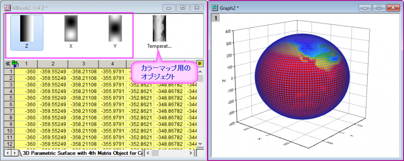

Parametric-Surface

同じ行列シートに最低3つの行列オブジェクトを準備します。
行列シートをアクティブにします。
メニューから作図> 3D： パラメトリック曲面を選択します。
(Originのプログラムフォルダにインストールされています。)
このプロットを作成するには、最低3つのオブジェクトを持つ行列シートが必要です。
最初の行列オブジェクトがZ値、2番目と3番目はX、Y値です。4番目のオプションオブジェクトは色付け用です。